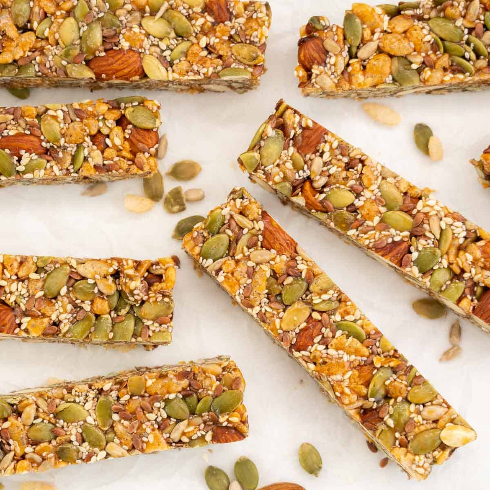

Recipes for a web developer
Web developers are a strange species. They seem to always huddle around each other and spend their time
designing that no one will ever use. Stranger still they apparently love typing weird languages into their computers.
Well thats mcuh about web developers, if you are one too then you prolly will like the following recipes
Energy bars
Ingredients:
- 1 cup rolled oats
- 1/2 cup almond butter
- 1/4 cup honey
- 1/4 cup dried cranberries
- 1/4 cup chocolate chips
- 1/4 cup sunflower seeds
Recipe:
- Preheat your oven to 350°F (175°C).
- In a large bowl, mix together the oats, almond butter, honey, dried cranberries, chocolate chips, and sunflower seeds.
- Press the mixture firmly into a 9x9 inch (23x23 cm) baking dish.
- Bake for 20-25 minutes, or until the edges are golden brown.
- Remove from oven and let cool completely in the dish.
- Cut into bars and store in an airtight container in the refrigerator.